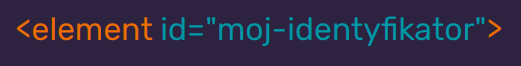

HTML = HyperText Markup Language
HTML odpowiada za tre i jej odpowiednie opakowanie.
| JAVASCRIPT |
| CSS |
| HTML |
| Tre |
Warstwa znajduje si nad treci co oznacza 偶e ma na ni wpyw lecz nie ma wpywu na pozostae.
Tre to:
- Teksty
- Nag贸wki
- Linki
- Listy
- Formularze
- Video
- Definicje
- Obrazki
- Ka偶dy inny nonik informacji

HTML skada si ze znacznik贸w/tag贸w/element贸w
Semantyczny = majcy znaczenie
<main>
G贸wna cz dokumentu
<section>
Sekcje dokumentu
<article>
Samdzielne trei
<header>
Nag贸wek - dokumentu / sekcji / artykuu
<footer>
Stopka - dokumentu / sekcji
<h1-h6>
Tekstowe nag贸wki tytuowe - dokumentu /sekcji
<p>
Paragraf / akapit
<br>
Nowa linia
<b><strong>
Pogrubienie / strong jest semantyczny i bardzo podkrela znaczenie treci w nim zawartych
<i><em>
Kursywa / em jest semantyczny i odnosi sie do czego z wiksz ironi
<img>
Obrazek o podanym adresie
<nav>
Nawigacja

Linki / cza wewntrz dokumentu
Identyfikuje element (przydaje si do nawigacji w obrbie dokumentu)
Jak sprawdzi czy m贸j HTML jest OK? Sprawd藕!